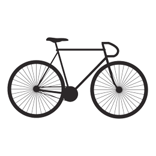

사진
취미삼아 시작한지 10년째. 행사, 웨딩, 돌잔치 같은 인물사진을 위주로 찍는 편! 덕분에 포토샵 사진보정은 가능한 상태.

자전거
사진 찍을 때 빼고 틈틈히 타다보니 어연 10년째. 재밌게 운동하고 싶어서 찾다가 완전 정착. 언젠가 서울에서 부산까지 국토종주 하는 것이 목표!
MBTI 로 알아보는 나의 성격
I : 말하기 전엔 내향형인지 잘 모르는 내향형 최대 아웃풋.
N : 아이디어 뱅크. 흥미로운 가능성을 보는 안목.
T : 논리력 끝판왕. 분석적이고 객관적인, 사실만 간단하게.
P : 상황에 따라 융통성과 개방성 up! 환경에 따라 변화하는 카멜레온